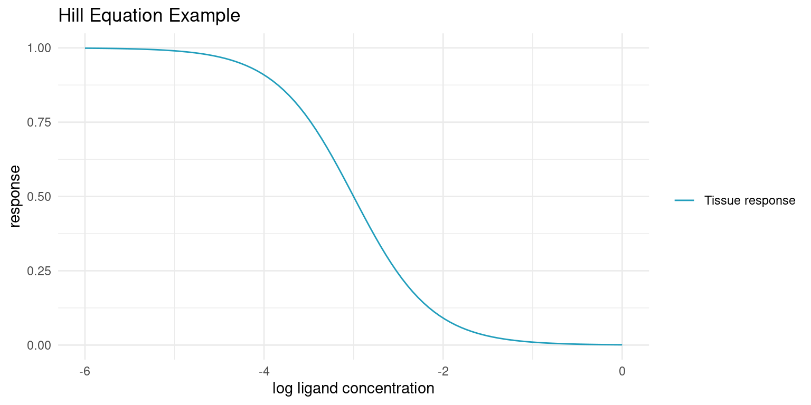
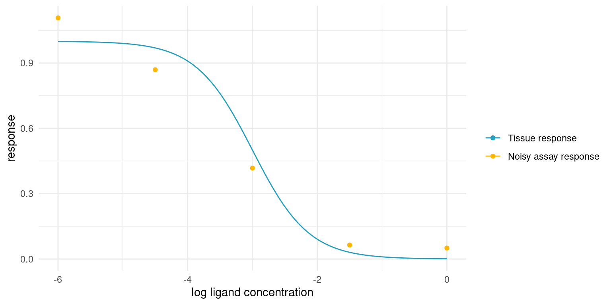
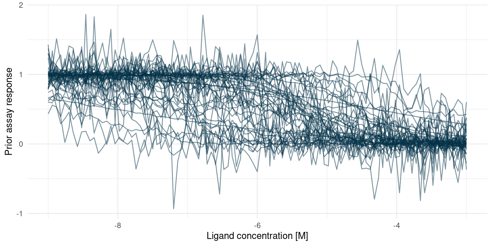
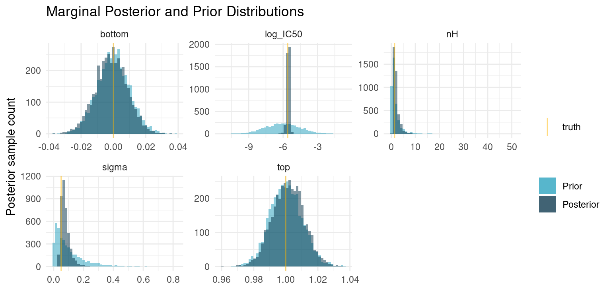
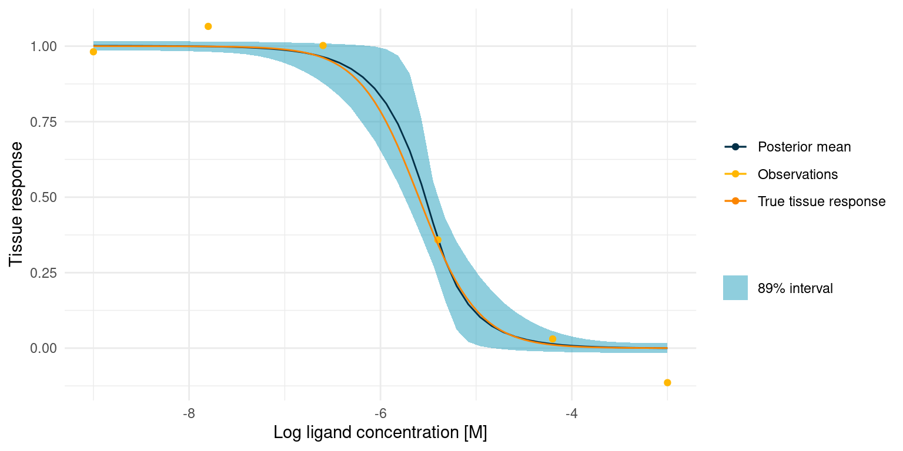
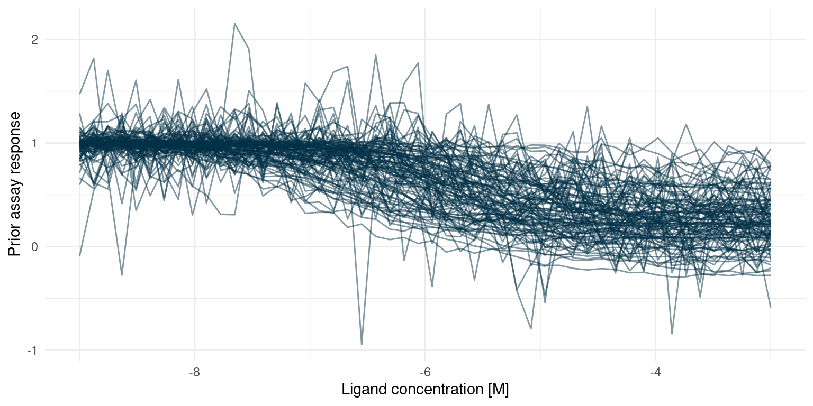
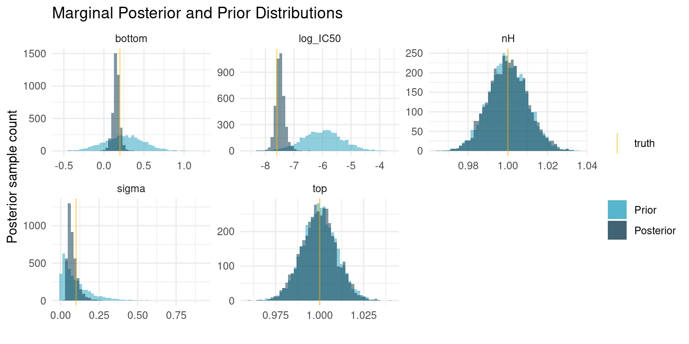
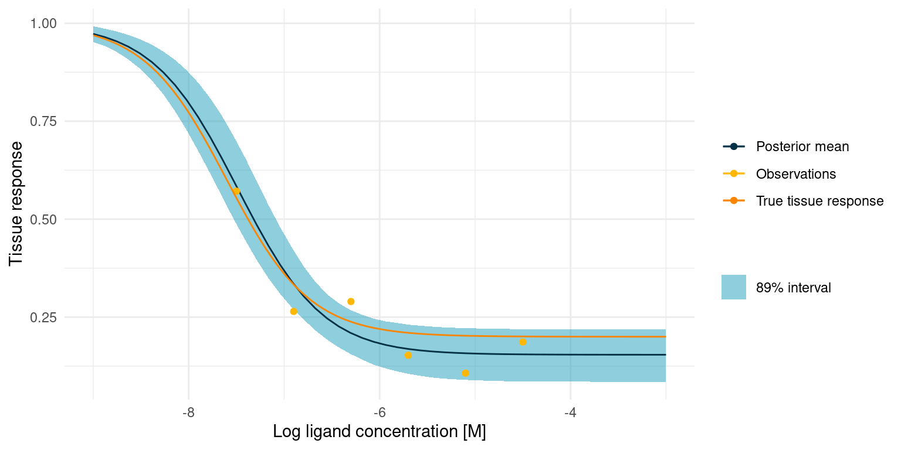
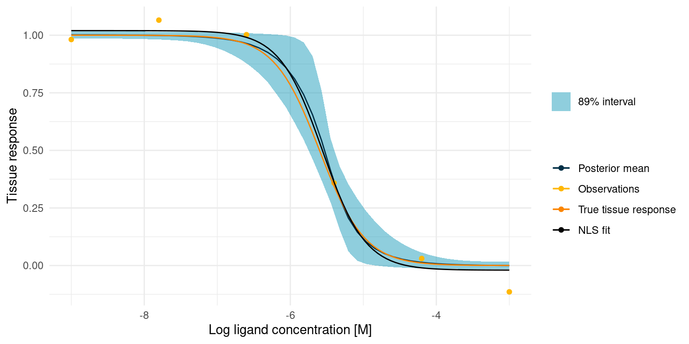

Bespoke Bayesian Model for Biochemical Assays
I am on a quest to improve the model fitting I do on biochemical assays. For some time, I have had this feeling that I should be able to extract more information from the data gathered in biochemical assays, in particular assays with a high throughput. I have been using classical machine learning techniques and generic fitting and optimisation functions to interpret data from such assays. While this approach works, it also neglects much of the available domain expertise. Many of the underlying biochemical mechanisms are known and I would like my models to take that into account so I get results that are more directly interpretable in the context of the hypothesis that required the assay in the first place. In other words, I want a bespoke model.
I will be developing the bespoke model one minimally viable step at a time. In this study, I am building a Bayesian model for biochemical assays where the underlying data generating process is the Hill equation for tissue responses [1]. I will then test the model in two simulated example studies.
I was inspired to write this study after reading the chapter “Generalized Linear Madness” in the book Statistical Rethinking by R. McElreath [2] and the writings of M. Betancourt [3]. For an introduction to bespoke Bayesian models, I highly recommend these resources.
If you are following along, we will build the Bayesian models in Stan and make use of the Rstan interface to extract posterior samples. For data wrangling and visualisation, we will use the Tidyverse.
library(ggplot2)
library(magrittr)
options(mc.cores = parallel::detectCores())
colour <- list(
orange_dark = "#fb8500",
orange_light = "#ffb703",
blue_dark = "#023047",
azure = "#219ebc",
blue_light = "#8ecae6"
)
set.seed(4444)Contents
Domain Expertise
Before we start coding a model or even looking at any data, let’s formally discuss the biochemical domain experitise.
Hill Equation
When a ligand, e.g. a drug, is an antagonist to a receptor that causes some tissue response, the strength of that response, \(\mu_i\), declines with increased concentration of that ligand, \([A_i]\). The response is known to follow the Hill Equation [1].
\[\mu_i = top - \frac{bottom - top}{1 + 10^{(\log_{10}(IC_{50}) - \log_{10}([A_i]))^{n_H}}}\]
When tissue response is plotted against log ligand concentration, the Hill equation is a downwards sloping S-curve where \(top\) is the maximum response and \(bottom\) is the minimum response. \(IC_{50}\) is the concentration at which the response is halfway between \(top\) and \(bottom\). The final parameter, the Hill coefficient \(n_H\), affects the steepness of the curve and is determined by the underlying kinetics. At \(n_H = 1\), a ligand binding is independent of previously bound ligands. At \(n_H < 1\) binding has diminishing returns and at \(n_H > 1\) ligands cooperatively bind for increasing returns on tissue response.
The Hill Equation appears in various forms in literature. Notably, when the ligand is an agonist, the curve has a positive slope and the halfway point is then often named \(EC_{50}\). The logarithm base used could also be any other, but base 10 is a common choice, as 10 times dilutions or other whole-number dilutions are easier to make.
Let’s plot an example curve
hill_function <- function(log_conc, bottom, top, log_IC50, nH) {
top + (bottom - top)/(1 + 10^((log_IC50 - log_conc)*nH))
}bottom <- 0
top <- 1
log_IC50 <- -3
nH <- 1
ggplot() +
xlim(log_IC50 - 3, log_IC50 + 3) +
geom_function(
fun = hill_function,
args = list(bottom = bottom, top = top, log_IC50 = log_IC50, nH = nH),
aes(colour = "Tissue response")
) +
labs(
x = "log ligand concentration",
y = "response",
title = "Hill Equation Example"
) +
scale_colour_manual(values = c("Tissue response" = colour$azure)) +
theme_minimal() +
theme(legend.title = element_blank())
In the real world, we cannot sample the true tissue response exactly. As a proxy for the tissue response, we employ assays that are performed in vitro. Such assays are sensitive to environmental conditions and, even in the most strictly controlled settings, yield noisy responses. Baring any systematic bias, the assay response, \(y_i\) should average to the true tissue response though.
assay_response <- function(log_conc, bottom, top, log_IC50, nH, sigma) {
noise <- rnorm(length(log_conc), 0, sigma)
hill_function(log_conc, bottom, top, log_IC50, nH) + noise
}tibble::tibble(
log_conc = seq(log_IC50 -3, log_IC50 + 3, length.out = 5),
y = assay_response(log_conc, bottom, top, log_IC50, nH, (top - bottom)/20)
) %>%
ggplot(aes(log_conc, y)) +
geom_point(aes(colour = "Noisy assay response")) +
geom_function(
fun = hill_function,
args = list(bottom = bottom, top = top, log_IC50 = log_IC50, nH = nH),
aes(colour = "Tissue response")
) +
scale_colour_manual(values = c(
"Tissue response" = colour$azure,
"Noisy assay response" = colour$orange_light
)) +
labs(
x = "log ligand concentration",
y = "response",
colour = ""
) +
theme_minimal()
From Domain Expertise to Probabilistic Model
With the basic domain knowledge in place, we are ready to start thinking about the assay in terms of probability distributions.
The first expression relates our observed assay responses, \(y_i\), to the true underlying tissue response, \(\mu_i\). Given repeat observations, the assay response should average to the tissue response and the variance should be small and finite, so it is not too far a stretch to think of the assay response as a sample from a normal distribution.
\[y_i \sim {\sf Normal}(\mu_i, \sigma)\]
Where \(\sigma\) is a parameter that is shared among all observations.
We already know how the tissue response relates to the ligand concentration, \([A_i]\), the variable of our assay; it is the Hill equation.
\[\mu_i = top - \frac{bottom - top}{1 + 10^{(\log_{10}(IC_{50}) - \log_{10}([A_i]))^{n_H}}}\]
These two expressions define our observational model or likelihood function. Next, we need to specify our prior model, and this is where domain expertise comes in handy.
The prior model needs to have prior assumptions and corresponding distributions for each parameter in the model. The parameters that need priors are \(IC_{50}\), \(bottom\), \(top\), \(n_H\), and \(\sigma\).
\(\mu_i\) is an unobserved variable - it is a deterministic function of the model parameters and our variable, \([A_i]\), so it does not need a prior.
The priors will always have to be specific to the assay at hand. In this study, we are not considering a real assay, but will be simulating instead. Even so, we can still discuss general prior strategies for parameters of the model, in the light of our general knowledge about the biochemical processes. Later, when we start simulating, we can lock in specific priors.
Let’s consider each parameter in turn, starting with \(n_H\).
A prior for the Hill coefficient
The Hill coefficient will in many cases be well known. For instance, if the receptor that causes the tissue response is known to have only one binding site for the ligand, it extremely unlikely that we will observe any cooperative or competitive kinetics.
When each ligand binds an individual receptor, the binding should be independent, regardless of the nature of the ligand. Hence, in theory, \(n_H = 1\) and we can assign a narrow prior, say \(n_H \sim {\sf Normal}(1, 0.1)\). This prior puts 95% of the probability between 0.8 and 1.2. If we were very sure, we could go for an even narrower prior.
In case we encountered a response with cooperative binding, we would just move the prior distribution a bit above 1. For instance, if we were studying hemoglobin, we could put the prior at \({\sf Normal}(2.5, 0.5)\) or thereabouts.
We know one more thing though. The Hill coefficient cannot be less than zero, as that would change the kinetics of the system. With the narrow prior around \(n_H = 1\) it is not really an issue, as there is virtually no probability mass below 0, but for kinetics with diminishing returns, an exponential prior or a half-normal distribution may be preferable.
A prior for the maximum tissue response
When discussing the \(top\) and \(bottom\) parameters, it is worth discussing assay technique. Even though the assay is performed in vitro, the subject, e.g. tissue, receptor, or enzyme, is often a biological construct and thus likely to exhibit batch variation. Furthermore, the raw assay reading carries no particular meaning. Instead, we employ controls to get a normalised response. For instance, we might use a bit of buffer as a negative control and assign the corresponding response to 1 and, at the other end, we might use a known strongly binding ligand as a positive control and assign the corresponding response to 0. The raw readings are then normalised between these two controls to yield the assay response, \(y_i\).
Back to the maximum response. In most contexts, the maximum response is not all that interesting compared to the other parameters. We expect the maximum response to be in the vicinity of the negative control, and if we were doing regular curve fitting, we might just fix the maximum response at 1.
In terms of probabilities, it means that we have very strong prior knowledge about the maximum response. We could allow it to vary a bit, but I assert that is would not offer much utility.
A prior for the minimum tissue response
The minimum response, \(bottom\), is much more interesting, as it represents the greatest effect a ligand can have on a tissue response. Analogous to the negative control, we set the response of a positive control to 0. However, we cannot necessarily fix the minimum response at this point.
Imagine an assay where we are testing a chemical compound in the hopes of identifying a new antagonist for the tissue response of interest. If the compound is not a ligand for the receptor, there is no response and \(bottom = top\). On the other hand, if we come across a ligand, then it might elicit a stronger or weaker response than the positive control.
What does this mean in terms of a prior? It means that screening experiments require a relatively wide prior for the \(bottom\) parameter; we only know that it should be less than \(top\) and that it is unlikely to be much smaller than 0. However, if we are studying the kinetics of the system and we have a known strong ligand as positive control, we can choose a much narrower prior around 0.
A prior for potency
Deciding on a prior for \(IC_{50}\) is difficult for two reasons. If we are screening new compounds, we might have no idea about the potency of the compound or whether it even has potency at all. Secondly, \(IC_{50}\) is a concentration and the tissue response depends on the ligand concentration relative to this concentration. In other words, it is the magnitude of the potency that matters.
The way to handle this is by thinking of a prior for \(\log_{10}(IC_{50})\) instead. Units matter, but if we use Molar concentration then \(\log_{10}(IC_{50}) = -9\) would correspond to an extremely potent ligand and \(\log_{10}(IC_{50}) = 0\) would correspond to extremely low potency.
A prior for experiment noise
Hopefully, the experiment noise is minimal. Consider \(\sigma = 0.1\). Since we expect most readings to fall in the range \([0, 1]\), this noise level translates to 95% of assay responses being within +-20% of the tissue response. This might be a lot or it might be what is expected from a biological assay, but the point is that, as long as we normalise the assay responses, this parameter should be easy to reason about. For instance, \(\sigma\) can never be less than zero, and if it is higher than 0.5, then the assay is more noise than signal.
Example Studies
Let’s move on to some simulated studies
Example Study 1 - Exploring Kinetics
In this study we are imagining a situation where we are trying to learn more about the kinetics of a tissue response. We are investigating a receptor for which we have a known strongly binding antagonist. We suspect that the receptor has multiple binding sites and that ligand binding is not independent. We also do not know the potency, \(IC_{50}\), of the antagonist, but we know that maximum tissue response is observed at \([A_i] > 10^{-3}\).
Let’s set some ‘secret’ values for the system and simulate assay readings. Later, we will try to recover these values.
study_1_params <- list(
bottom = 0,
top = 1,
log_IC50 = -5.6,
nH = 1.4,
sigma = 0.05
)A model for study 1
Before performing the experiment, i.e. simulating observations, we should take some time to reflect on our domain expertise and translate it into a bespoke probabilistic model for this particular scenario.
We know that we will measure an assay response, \(y_i\), for a number of ligand concentrations \([A_i]\). We also know that the assay response averages to the tissue response, \(\mu_i\), but that observations are noisy:
\[y_i \sim {\sf Normal}(\mu_i, \sigma)\]
The tissue response is a deterministic function of four kinetic parameters, as described by the Hill equation:
\[\mu_i = top - \frac{bottom - top}{1 + 10^{(\log_{10}(IC_{50}) - \log_{10}([A_i]))^{n_H}}}\]
The \(top\) parameter should, on average, be equal to our negative control, which we fix at 1. Our negative control is just water or buffer, and we have no reason to believe that the maximum tissue response when ligand concentration is infinitely small is any different from the buffer. Thus, our domain expertise tells us to put a very narrow prior on this parameter:
\[top \sim {\sf Normal}(1, 0.01)\]
The \(bottom\) parameter should, on average, be equal to our positive control, which we fix at 0. Our positive control is an extreme concentration of the ligand to be sure that it elicits the minimum tissue response. We have no reason to believe that the minimum tissue response when ligand concentration is infinitely large is any different from the extreme concentration. Thus, our domain expertise tells us to put a very narrow prior on this parameter too:
\[bottom \sim {\sf Normal}(0, 0.01)\]
We do not know much about the Hill coefficient, \(n_H\), as we have limited experience with the underlying kinetics. We do, however, know that the Hill coefficient should not be less than 0. While \(n_H\) may be more or less than 1, we also know that it is very unlikely that it is orders of magnitude smaller or larger. We can place a wide log-normal prior on this parameter to keep it positive and we can choose distribution parameters such that there is equal probability above and below 1:
\[n_H \sim {\sf LogNormal}(0, 1)\]
We also do not know much about \(\log_{10}(IC_{50})\), but we consider -9 and -3 fairly extreme values, so we can just use a wide normal prior that keeps the parameter mostly in that range:
\[\log_{10}(IC_{50}) \sim {\sf Normal}(-6, 1.5)\]
Finally, we should consider how noisy our observations might be. We have little experience with this assay, so we expect a lot of noise. Let’s say that we expect the assay response to be within 20% above or below the tissue response, in most cases. This roughly translates to an expectation of \(\sigma = 0.1\). We also know that \(\sigma > 0\), so we can use an exponential prior with an expectation of 0.1, i.e. a rate of 10:
\[\sigma \sim {\sf Exp}(10)\]
Prior predictive check in Tidyverse
With the model specified, my hands are itching to start fitting. That would be a poor idea, though. Before fitting, we should verify that the model as a whole conforms to our domain knowledge. Even though we have chosen what we think are reasonable priors, it it difficult to get an intuition about how all those priors interact. However, since the model is probabilistic and generative, we can sample predictions from it without fitting anything first. If the distribution of those prior predictions agree with our expectations, then we are good to go.
For a simple model like this, it is fairly easy to perform such a prior predictive check with Tidyverse and basic R functionality. First we sample parameters from the prior distributions, then we calculate the deterministic variables, and finally draw out the curves.
n_samples <- 50
# A function to easily sample prior parameters
study_1_priors <- function(n) {
tibble::tibble(
top = rnorm(n, 1, 0.01),
bottom = rnorm(n, 0, 0.01),
nH = rlnorm(n, 0, 1),
log_IC50 = rnorm(n, -6, 1.5),
sigma = rexp(n, 10)
)
}
# Draw each corresponding assay response
study_1_prior_pred_samples <- study_1_priors(n_samples) %>%
dplyr::filter(top > bottom) %>% # This is very unlikely to happen though
dplyr::mutate(
tissue_response = purrr::pmap(
list(top, bottom, nH, log_IC50, sigma),
~ geom_function(
fun = assay_response,
args = list(
top = ..1,
bottom = ..2,
nH = ..3,
log_IC50 = ..4,
sigma = ..5
),
colour = colour$blue_dark,
alpha = 0.5
)
)
)
p <- ggplot() +
xlim(-9, -3) +
theme_minimal() +
labs(x = "Ligand concentration [M]" , y = "Prior assay response")
Reduce(`+`, study_1_prior_pred_samples$tissue_response, init = p)
This looks much like the curves we would expect from a real assay. Extreme concentrations have extreme responses and the s-shaped part of the curve is somewhere in between. In some cases, the noise is extreme but that is probably to be expected from an assay where we have little or no experience.
I initially set the prior for \(n_H\) way too wide, resulting in many extreme responses. That does not comply with domain knowledge, so I shrunk the prior.
Building a Stan model for study 1
Now we are almost ready to fit the model. To do so, I have implemented it in Stan. There are other excellent introductions to Stan, see the Stan User Guide or some of the references below.
Here is the Stan model that corresponds to the model described above.
writeLines(readLines("hill_equation_study_1.stan"))data {
int<lower=0> N; // Number of observations
vector[N] log_conc; // Tested concentration on log10 scale
vector[N] y; // Normalised assay responses
}
parameters {
real bottom;
real<lower=bottom> top;
real log_IC50;
real<lower=0> nH;
real<lower=0> sigma;
}
model {
vector[N] mu;
bottom ~ normal(0, 0.01);
top ~ normal(1, 0.01);
log_IC50 ~ normal(-6, 1.5);
nH ~ lognormal(0, 1);
sigma ~ exponential(10);
for ( i in 1:N) {
mu[i] = top + (bottom - top)/(1 + 10^((log_IC50 - log_conc[i])*nH));
}
y ~ normal(mu, sigma);
}Fitting study 1
Now we can simulate some observations and fit the model. To make the simulation realistic, we generate observations in a wide space of ligand concentration, from \(\log_{10}([A_i]) = -9\) to \(\log_{10}([A_i]) = -3\). To make it a challenge, we will generate just 6 observations.
Fitting our bespoke Bayesian model amounts to sampling from the posterior distribution. Here I am drawing 1000 samples per chain from the posterior. This is not a large model, so we could easily sample a lot more if we wanted.
n_observations <- 6
n_posterior_samples <- 1e3
# Determine the log concentrations at which to simulate
study_1_concentrations <- seq(-9, -3, length.out = n_observations)
# Simulate observations using our 'secret' parameters
study_1_observations <- rlang::exec(
assay_response,
study_1_concentrations,
!!!study_1_params
)
# Everything the model needs to know
study_1_data_list <- list(
N = n_observations,
log_conc = study_1_concentrations,
y = study_1_observations
)
# This compiles the model and samples from the posterior
study_1_post <- rstan::stan(
"hill_equation_study_1.stan",
data = study_1_data_list,
chains = 4,
iter = n_posterior_samples * 2,
warmup = n_posterior_samples,
seed = 4444
)Now we have samples from the posterior distribution. Let’s put them to work!
Recall that the underlying research question was the kinetics of the tissue response. So more than the actual tissue response, we are interested in the posterior marginal distributions for the Hill coefficient, \(n_H\), and the potency, \(\log_{10}(IC_{50})\). We can extract samples for the marginal distribution of each of our model parameters.
# Extract samples from the posterior distribution
posterior_samples <- rstan::extract(study_1_post) %>%
tibble::as_tibble() %>%
dplyr::select(bottom, top, log_IC50, nH, sigma)
# True parameters of the simulation.
parameter_tibble <- study_1_params %>%
tibble::as_tibble() %>%
tidyr::pivot_longer(
dplyr::everything(),
names_to = "parameter",
values_to = "truth"
)
# Plot each of the marginal distributions, comparing prior, posterior, and true
# simulation parameters
posterior_samples %>%
tidyr::pivot_longer(
dplyr::everything(),
names_to = "parameter",
values_to = "sample"
) %>%
dplyr::left_join(parameter_tibble, by = "parameter") %>%
ggplot() +
geom_histogram(
data = tidyr::pivot_longer(
study_1_priors(nrow(posterior_samples)),
dplyr::everything(),
names_to = "parameter",
values_to = "sample"
),
mapping = aes(x = sample, fill = "Prior"),
bins = 50,
alpha = 0.5
) +
geom_histogram(aes(x = sample, fill = "Posterior"), bins = 50, alpha = 0.5) +
geom_vline(aes(xintercept = truth, colour = "truth"), alpha = 0.5) +
facet_wrap(~ parameter, scales = "free") +
theme_minimal() +
scale_colour_manual(values = c("truth" = colour$orange_light)) +
scale_fill_manual(values = c(
"Prior" = colour$azure,
"Posterior" = colour$blue_dark
)) +
labs(
y = "Posterior sample count",
x = "",
colour = "",
fill = "",
title = "Marginal Posterior and Prior Distributions"
)
There are so many exciting things to discuss here. I have opted to plot samples from both the posterior and prior distributions, so we can appreciate how the data worked to update our prior beliefs to posterior distributions.
The first thing to notice is that the parameters for which we selected very narrow priors, i.e. \(top\) and \(bottom\), nothing has changed. The data is not enough to overwhelm the strong priors and the posterior is mostly informed by the prior.
On the other hand, the data has provided enough information to concentrate the probability density to a much narrower interval for the three remaining parameters. The posterior median for \(\log_{10}(IC_{50})\) is very close to the truth. \(nH\) is a bit more uncertain, but most of the probability is concentrated well above one, which correctly suggests cooperatively binding ligands.
post_summaries <- rstan::summary(
study_1_post,
pars = c("bottom", "top", "log_IC50", "nH", "sigma"),
probs = c(0.055, 0.5, 0.945)
)$summary
tibble::as_tibble(post_summaries) %>%
dplyr::select(c("5.5%", "50%", "94.5%")) %>%
dplyr::mutate(parameter = rownames(post_summaries), .before = 1) %>%
knitr::kable()| parameter | 5.5% | 50% | 94.5% |
|---|---|---|---|
| bottom | -0.0170975 | -0.0010557 | 0.0144481 |
| top | 0.9861742 | 1.0016366 | 1.0170142 |
| log_IC50 | -5.7516723 | -5.5360470 | -5.4050335 |
| nH | 0.9012444 | 1.6121050 | 4.1663929 |
| sigma | 0.0434627 | 0.0712316 | 0.1351734 |
At this point, we can draw a conclusion for our experiment: Given our model assumptions, data strongly suggests cooperatively binding kinetics with a 89% compatibility interval for \(\log_{10}(IC_{50})\) at about \([-5.75, -5.41]\).
To improve the result, we could run another experiment using this much narrower range for \(\log_{10}(IC_{50})\) as a prior and for determining ligand concentrations to test, as that interval is likely to contain the s-shaped part of the Hill curve.
Speaking of the Hill curve, let’s see what our posterior predictions look like for the tissue response as a function of log ligand concentration.
study_1_post_pred <- posterior_samples %>%
tidyr::expand_grid(log_conc = seq(-3, -9, length.out = 50)) %>%
dplyr::mutate(tissue_response = purrr::pmap_dbl(
list(log_conc, bottom, top, log_IC50, nH),
hill_function
)) %>%
dplyr::group_by(log_conc) %>%
dplyr::summarise(
response_mean = mean(tissue_response),
response_upper = quantile(tissue_response, probs = 0.945),
response_lower = quantile(tissue_response, probs = 0.055)
) %>%
ggplot() +
geom_ribbon(
aes(
x = log_conc,
ymin = response_lower,
ymax = response_upper,
fill = "89% interval"
),
alpha = 0.5
) +
geom_line(aes(x = log_conc, y = response_mean, colour = "Posterior mean")) +
geom_point(
data = tibble::tibble(
log_conc = study_1_concentrations,
observations = study_1_observations
),
aes(x = log_conc, y = observations, colour = "Observations")
) +
geom_function(
fun = hill_function,
args = study_1_params[-5],
mapping = aes(colour = "True tissue response")
) +
labs(
y = "Tissue response",
x = "Log ligand concentration [M]",
colour = "",
fill = ""
) +
scale_fill_manual(values = c("89% interval" = colour$azure)) +
theme_minimal()
study_1_post_pred +
scale_colour_manual(values = c(
"Posterior mean" = colour$blue_dark,
"Observations" = colour$orange_light,
"True tissue response" = colour$orange_dark
))
The true tissue response is all contained in the 89% interval for the posterior predicted response, despite noisy observations and despite the fact that 5 out of 6 observations lie outside the s-shaped part of the curve.
However, it also seems that we got lucky and had an observation very close to the true \(\log_{10}(IC_{50})\). This point quite clearly provides an anchor for the entire model. We might not always be this lucky. In that case, however, the posterior marginal distributions for the kinetic parameters would just be much more informed by the priors, in turn telling us that we should perform more experiments.
Example Study 2 - New Drug
In this study, we imagine that we are developing a new potential drug candidate. As a part of the development process, we have produced a modified version of an endogenous ligand and we are looking to assess its potency, \(\log_{10}(IC_{50})\), and efficacy, which is defined in terms of \(bottom\).
We are able to approximate the tissue response in vitro, but it involves complex biochemistry, so noisy measurements are to be expected.
The tissue response to the endogenous ligand is well characterised, so we know that the ligands bind independently, i.e. \(n_H = 1\), and we know that for the endogenous ligand \(\log_{10}(IC_{50}) = -7.2\).
Let’s set some ‘secret’ values for the system and simulate assay readings. Later, we will try to recover these values.
study_2_params <- list(
bottom = 0.2,
top = 1,
log_IC50 = -7.6,
nH = 1,
sigma = 0.1
)A model for study 2
We are still assuming the same kinetics for the tissue response as in study 1.
\[y_i \sim {\sf Normal}(\mu_i, \sigma)\]
\[\mu_i = top - \frac{bottom - top}{1 + 10^{(\log_{10}(IC_{50}) - \log_{10}([A_i]))^{n_H}}}\]
Our assumptions about the \(top\) parameter are the same as in study 1.
\[top \sim {\sf Normal}(1, 0.01)\]
In this case, we have produced a variant of the endogenous ligand. The most likely scenario is that our modification causes the ligand to lose efficacy such that the minimum tissue response is somewhere between 0 and 1. However, there is a small chance that our superior design yields a ligand that is more efficacious than the endogenous ligand and thus has a minimum response below 0. Our prior for the \(bottom\) parameter should thus be concentrated between 0 and 1 but with some probability below 0. I have opted for a normal prior.
Note that this prior puts some probability in the scenario where the \(bottom\) parameter is larger than the \(top\) parameter. This is not consistent with our domain knowledge and it is a challenge that we will handle in a moment.
\[bottom \sim {\sf Normal}(0.25, 0.25)\]
Changing the ligand will not change the receptor, so it is extremely unlikely that the Hill coefficient changes.
\[n_H \sim {\sf Normal}(1, 0.01)\]
The modified ligand is likely to lose potency, i.e. have a higher \(\log_{10}(IC_{50})\), compared to the endogenous ligand which has \(\log_{10}(IC_{50}) = -7.2\), but we might get lucky and see an increase. This is not much to go on, but it should still allow us to use a narrower prior than in study 1.
\[\log_{10}(IC_{50}) \sim {\sf Normal}(-6, 0.7)\]
Noise is expected to be quite severe.
\[\sigma \sim {\sf Exp}(10)\]
Prior predictive check with Stan
As in the previous study, we should check that the prior predictive distribution conforms to expectations as given by our domain expertise.
This time I have opted to utilise Stan to sample from the priors. It is a bit of extra work, but it scales well for larger and more complex models.
One challenge we have, is the constraint that \(top \ge bottom\). A way to handle this could be to discard any samples that violates the constraint and replace them with new samples until the desired number of samples are obtained. I would like something a bit more elegant.
In Stan, constraints can be set on parameters and, during Monte Carlo sampling from the posterior, those constraints are enforced. However, when we want to use random number generators to sample from the prior distributions, we have to enforce it ourselves. I have implemented a small Stan program to sample from the priors in study 2:
writeLines(readLines("hill_equation_study_2_prior.stan"))functions {
// A lower-bounded normal distribution random number generator
real normal_lower_rng(real mu, real sigma, real lower_bound) {
// Locate the lower bound
real p_lower_bound = normal_cdf(lower_bound, mu, sigma);
// Uniformly sample probabilities in the bounded range
real u = uniform_rng(p_lower_bound, 1);
// Transform back to a normal distribution
real y = mu + sigma * inv_Phi(u);
return y;
}
// An upper-bounded normal distribution random number generator
real normal_upper_rng(real mu, real sigma, real upper_bound) {
// Locate the upper bound
real p_upper_bound = normal_cdf(upper_bound, mu, sigma);
// Uniformly sample probabilities in the bounded range
real u = uniform_rng(0, p_upper_bound);
// Transform back to a normal distribution
real y = mu + sigma * inv_Phi(u);
return y;
}
}
data {
int<lower=0> N; // Number of samples
vector[N] log_conc; // Tested concentration on log10 scale
}
generated quantities{
real<lower = 0> nH = normal_lower_rng(1, 0.01, 0);
real top = normal_rng(1, 0.01);
real bottom = normal_upper_rng(0.25, 0.25, top);
real log_IC50 = normal_rng(-6, 0.7);
real sigma = exponential_rng(10);
vector[N] mu;
vector[N] y;
for ( i in 1:N) {
mu[i] = top + (bottom - top)/(1 + 10^((log_IC50 - log_conc[i])*nH));
y[i] = normal_rng(mu[i], sigma);
}
}Note that there is no model block in the code. This program should not run a Monte Carlo simulation. Rather, it should just pull samples from the prior distributions. This can be accomplished with Stan’s Fixed Parameter mode.
n_prior_samples <- 50
log_conc <- seq(-9, -3, length.out = n_prior_samples)
prior <- rstan::stan(
"hill_equation_study_2_prior.stan",
data = list(N = n_prior_samples, log_conc = log_conc),
algorithm = "Fixed_param",
chains = 1,
iter = 100,
warmup = 0,
seed = 4444
)
samples <- rstan::extract(prior)
sample_readings <- lapply(1:100, function(i) {
tibble::tibble(
y = samples$y[i,],
x = log_conc
) %>%
geom_line(mapping = aes(x, y), colour = colour$blue_dark, alpha = 0.5)
})
p <- ggplot() +
theme_minimal() +
labs(x = "Ligand concentration [M]" , y = "Prior assay response")
Reduce(`+`, sample_readings, init = p)
We expect most potential curves to reach 50% of their minimum response well above -7.2, corresponding to lost potency. There is, however, still a small chance of increased potency, i.e. a value smaller than -7.2. Likewise for the minimum response, we find it most likely that a modification will cause the minimum response to be somewhere between 0 and 1, yet there is a chance that the minimum response is less than zero.
All in all, these seem like suitable priors, but we also note that the amount of noise could severely impact conclusions.
Building a Stan model for study 2
Here is the Stan model that corresponds to the model described above. Note that we do not need to specify our own distribution functions to satisfy constraints. When running the simulation, Stan keeps track of constraints and makes sure that they are satisfied.
writeLines(readLines("hill_equation_study_2_post.stan"))data {
int<lower=0> N;
vector[N] log_conc;
vector[N] y;
}
parameters {
real bottom;
real<lower=bottom> top;
real log_IC50;
real<lower=0> nH;
real<lower=0> sigma;
}
model {
vector[N] mu;
bottom ~ normal(0.25, 0.25);
top ~ normal(1, 0.01);
log_IC50 ~ normal(-6, 0.7);
nH ~ normal(1, 0.01);
sigma ~ exponential(10);
for ( i in 1:N) {
mu[i] = top + (bottom - top)/(1 + 10^((log_IC50 - log_conc[i])*nH));
}
y ~ normal(mu, sigma);
}Fitting study 2
Now we can simulate some observations and fit the model. As we do not expect our modified ligand to stray too far from the curve of the endogenous ligand, we generate observations in a narrow space of ligand concentration, from \(\log_{10}([A_i]) = -7.5\) to \(\log_{10}([A_i]) = -4.5\). To make it a challenge, we will generate just 6 observations.
As for study 1, I am drawing 1000 samples per chain from the posterior.
n_observations <- 6
n_posterior_samples <- 1e3
# Determine the log concentrations at which to simulate
study_2_concentrations <- seq(-7.5, -4.5, length.out = n_observations)
# Simulate observations using our 'secret' parameters
study_2_observations <- rlang::exec(
assay_response,
study_2_concentrations,
!!!study_2_params
)
# Everything the model needs to know
data_list <- list(
N = n_observations,
log_conc = study_2_concentrations,
y = study_2_observations
)
# This compiles the model and samples from the posterior
study_2_post <- rstan::stan(
"hill_equation_study_2_post.stan",
data = data_list,
chains = 4,
iter = n_posterior_samples * 2,
warmup = n_posterior_samples,
seed = 4444
)The underlying research question for this study was primarily concerned with the \(\log_{10}(IC_{50})\) and \(bottom\) parameters. So more than the actual tissue response, we are interested in the marginal posterior distributions for these two parameters. Let’s start by summarising the marginal posterior distributions.
study_2_priors <- function(n) {
tibble::tibble(
top = rnorm(n, 1, 0.01),
bottom = rnorm(n, 0.25, 0.25),
nH = rnorm(n, 1, 0.01),
log_IC50 = rnorm(n, -6, 0.7),
sigma = rexp(n, 10)
)
}
# Extract samples from the posterior distribution
posterior_samples <- rstan::extract(study_2_post) %>%
tibble::as_tibble() %>%
dplyr::select(bottom, top, log_IC50, nH, sigma)
# True parameters of the simulation.
parameter_tibble <- study_2_params %>%
tibble::as_tibble() %>%
tidyr::pivot_longer(
dplyr::everything(),
names_to = "parameter",
values_to = "truth"
)
# Plot each of the marginal distributions, comparing prior, posterior, and true
# simulation parameters
posterior_samples %>%
tidyr::pivot_longer(
dplyr::everything(),
names_to = "parameter",
values_to = "sample"
) %>%
dplyr::left_join(parameter_tibble, by = "parameter") %>%
ggplot() +
geom_histogram(
data = tidyr::pivot_longer(
study_2_priors(nrow(posterior_samples)),
dplyr::everything(),
names_to = "parameter",
values_to = "sample"
),
mapping = aes(x = sample, fill = "Prior"),
bins = 50,
alpha = 0.5
) +
geom_histogram(aes(x = sample, fill = "Posterior"), bins = 50, alpha = 0.5) +
geom_vline(aes(xintercept = truth, colour = "truth"), alpha = 0.5) +
facet_wrap(~ parameter, scales = "free") +
theme_minimal() +
scale_colour_manual(values = c("truth" = colour$orange_light)) +
scale_fill_manual(
values = c("Prior" = colour$azure, "Posterior" = colour$blue_dark)
) +
labs(
y = "Posterior sample count",
x = "",
colour = "",
fill = "",
title = "Marginal Posterior and Prior Distributions"
)
The first thing to notice here is that the posterior probability mass is more concentrated than the prior. However, the marginal posterior distributions for \(\log_{10}(IC_{50})\) and \(bottom\) are still relatively wide. Recall that a difference of one in \(\log_{10}(IC_{50})\) is an order of magnitude in terms of concentration. Small changes in potency matter a lot if we have to manufacture the compound at one point. So our data did not tell us much about the precise potency and efficacy of this modified ligand.
On the other hand, the posterior probability mass is mostly at \(\log_{10}(IC_{50}) < -7.2\) and \(bottom > 0\), i.e. we are quite certain that our modified ligand has higher potency than the endogenous ligand but elicits a smaller response. With well defined priors and a small amount of data, we have a perfectly good screening experiment.
If we were interested in gaining a better understanding of the modified ligand, we could perform more experiments and get those posterior probability masses even more concentrated. We also see that the true noise of the assay is quite high; reducing it might help to better learn the underlying tissue response.
post_summaries <- rstan::summary(
study_2_post,
pars = c("bottom", "top", "log_IC50", "nH", "sigma"),
probs = c(0.055, 0.5, 0.945)
)$summary
tibble::as_tibble(post_summaries) %>%
dplyr::select(c("5.5%", "50%", "94.5%")) %>%
dplyr::mutate(parameter = rownames(post_summaries), .before = 1) %>%
knitr::kable()| parameter | 5.5% | 50% | 94.5% |
|---|---|---|---|
| bottom | 0.0848792 | 0.1544085 | 0.2183073 |
| top | 0.9831631 | 0.9995818 | 1.0156166 |
| log_IC50 | -7.7146376 | -7.4971292 | -7.2296555 |
| nH | 0.9842731 | 0.9999304 | 1.0161020 |
| sigma | 0.0405449 | 0.0680069 | 0.1388871 |
At this point, we can draw a conclusion for our experiment: Given our model assumptions, data strongly suggests that the modified ligand has higher potency than the endogenous ligand with a 89% credibility interval for \(\log_{10}(IC_{50})\) at about \([-8.08, -7.22]\). We also conclude that the modified ligand has less efficacy than the endogenous ligand with a 89% credibility interval for \(bottom\) at about \([0.12, 0.30]\)
Before accepting the conclusion, it is a good idea to look at the posterior predictions and compare them to the data.
posterior_samples %>%
tidyr::expand_grid(log_conc = seq(-3, -9, length.out = 50)) %>%
dplyr::mutate(tissue_response = purrr::pmap_dbl(
list(log_conc, bottom, top, log_IC50, nH),
hill_function
)) %>%
dplyr::group_by(log_conc) %>%
dplyr::summarise(
response_mean = mean(tissue_response),
response_upper = quantile(tissue_response, probs = 0.945),
response_lower = quantile(tissue_response, probs = 0.055)
) %>%
ggplot() +
geom_ribbon(
aes(
x = log_conc,
ymin = response_lower,
ymax = response_upper,
fill = "89% interval"
),
alpha = 0.5
) +
geom_line(aes(x = log_conc, y = response_mean, colour = "Posterior mean")) +
geom_point(
data = tibble::tibble(
log_conc = study_2_concentrations,
observations = study_2_observations
),
aes(x = log_conc, y = observations, colour = "Observations")
) +
geom_function(
fun = hill_function,
args = study_2_params[-5],
mapping = aes(colour = "True tissue response")
) +
scale_colour_manual(values = c(
"Posterior mean" = colour$blue_dark,
"Observations" = colour$orange_light,
"True tissue response" = colour$orange_dark
)) +
labs(
y = "Tissue response",
x = "Log ligand concentration [M]",
colour = "",
fill = ""
) +
scale_fill_manual(values = c("89% interval" = colour$azure)) +
theme_minimal()
The true tissue response is all contained in the 89% interval for the posterior predicted response, despite noisy observations and despite the fact that 4 out of 6 observations lie outside the s-shaped part of the curve.
Assessing posterior quality
During the two studies, I avoided a rather important subject, namely assessing the quality of our posterior estimate. The algorithm that explores and samples from the posterior, Hamiltonian Monte Carlo (HMC), is as much a part of the Bayesian model as priors and as such should enjoy the same deliberate consideration.
We have observed that the posterior predictive distribution yields reasonable predictions, which gives us a lot of confidence in the model as a whole. In these studies, we could also compare the predictions to the true underlying parameters of the simulations, so we know that the model is at least somewhat right.
All is not perfectly well, however. In study one, Stan complains that during the HMC run there were divergent transitions:
rstan::check_divergences(study_1_post)5 of 4000 iterations ended with a divergence (0.125%).
Try increasing 'adapt_delta' to remove the divergences.Stan is noisy and will complain when something seems wrong in the HMC sampler.
In this case, it is divergent transitions which usually happens when an iteration ends up in a part of parameter space where the probabilities have large gradients.
Increasing adapt_delta as suggested by Stan will help avoid the divergent transitions, but why were they there in the first place? Let’s look at some diagnostic parameters for the posterior in the first study:
post_summaries <- rstan::summary(
study_1_post,
pars = c("bottom", "top", "log_IC50", "nH", "sigma"),
probs = c(0.055, 0.5, 0.945)
)$summary
tibble::as_tibble(post_summaries) %>%
dplyr::select(c("n_eff", "Rhat")) %>%
dplyr::mutate(parameter = rownames(post_summaries), .before = 1) %>%
knitr::kable()| parameter | n_eff | Rhat |
|---|---|---|
| bottom | 1610.7382 | 1.002482 |
| top | 3738.8936 | 1.000015 |
| log_IC50 | 1401.6208 | 1.002600 |
| nH | 523.3805 | 1.012667 |
| sigma | 1414.4814 | 1.000310 |
n_eff is an estimate of the number of independent samples from the posterior. Rhat is a measure of convergence. Values \(\hat{R} > 1.01\) indicate that convergence has not entirely been reached.
According to the diagnostics, the marginal posterior for \(n_H\) has been challenging to estimate. This is not altogether surprising, considering that we only have one good point on the s-shaped part of the curve. There are many combinations of \(\log_{10}(IC_{50})\) and \(n_H\) that would pass though the point equally well and some of them have extreme probability gradients.
So why does increasing adapt_delta work? Intuitively, it causes Stan to pick a smaller step size for the HMC sampler. This reduces the chance that the sample ends up in a far off part of parameter space where gradients are extreme. The trade-off is that the posterior might be less efficiently sampled, so for larger models, one might have to do more samples to fully explore the posterior.
Let’s try running study one with an increased adapt_delta.
study_1_post_improved <- rstan::stan(
"hill_equation_study_1.stan",
data = study_1_data_list,
chains = 4,
iter = n_posterior_samples * 2,
warmup = n_posterior_samples,
seed = 4444,
control = list(adapt_delta = 0.95)
)That should improve the situation.
rstan::check_divergences(study_1_post_improved)0 of 4000 iterations ended with a divergence.Indeed it did!. Let’s also have a look at the diagnostics.
post_summaries <- rstan::summary(
study_1_post_improved,
pars = c("bottom", "top", "log_IC50", "nH", "sigma"),
probs = c(0.055, 0.5, 0.945)
)$summary
tibble::as_tibble(post_summaries) %>%
dplyr::select(c("n_eff", "Rhat")) %>%
dplyr::mutate(parameter = rownames(post_summaries), .before = 1) %>%
knitr::kable()| parameter | n_eff | Rhat |
|---|---|---|
| bottom | 2103.743 | 0.9995628 |
| top | 3942.552 | 1.0001219 |
| log_IC50 | 1152.528 | 1.0010730 |
| nH | 1380.143 | 1.0016422 |
| sigma | 1375.529 | 1.0041702 |
The numbers have improved and we have more faith in the posterior samples. Remember though that having good diagnostics alone does not imply a good model. The diagnostic check should be combined with prior and posterior predictive checks to ensure that the model is reasonable.
There is so much more to discuss about diagnosing HMC - we have barely scratched the surface here. ?rstan::check_hmc_diagnostics is a great place to start, if you want to learn more.
Comparing to another fitting method
Before wrapping up, I’d like to return to my initial goal, which was to squeeze more information out of the data I get from biochemical assays.
At this point, all we have done is fit a model to two experiments of six data points each and, despite the assistance from Stan, it has taken more code and more computation than a ‘classic’ fit would have. So was it worth it? Let’s compare.
Here I am fitting the data from study one using non-linear least squares. To make it fair, I have put in as much information as the optimisation algorithm allows: the initial guess is at the median of the priors we set for study one and the parameters are roughly constrained to the 95% prior interval.
mod <- nls(
y ~ top + (bottom - top)/(1 + 10^((log_IC50 - log_conc)*nH)),
data = study_1_data_list,
algorithm = "port",
start = list(bottom = 0, top = 1, log_IC50 = -6, nH = 1),
lower = list(bottom = -0.02, top = 0.98, log_IC50 = -9, nH = 0),
upper = list(bottom = 0.02, top = 1.02, log_IC50 = -3, nH = 100)
)
study_1_post_pred +
geom_function(
fun = hill_function,
args = mod$m$getPars(),
mapping = aes(colour = "NLS fit")
) +
scale_colour_manual(values = c(
"Posterior mean" = colour$blue_dark,
"Observations" = colour$orange_light,
"True tissue response" = colour$orange_dark,
"NLS fit" = "black"
))
The NLS fit is obviously close to the true tissue response and it took much less code and time to fit. Compared to our Bayesian model, the NLS fit is not bad. In fact, it will be useful in many cases, but there are a few notable differences.
With the Bayesian model, we get an estimate of the amount of noise in the experiment, in addition to the parameters of the Hill equation. Such an estimate can be very useful for understanding and continuous improvement of the biochemical assays.
With the Bayesian model, we also get marginal posterior distributions. With a regular fit, we only get a point estimate for each parameter and any uncertainty is lost. We do not always need anything but a point estimate to answer our hypotheses, but the marginal posterior distributions can be useful in future experimental design and as priors for the next experiment.
Finally there is an added robustness. Biological data has all sorts of weird behaviour. In a situation where the data points are all over the place, due to some unknown external factor, the resulting Bayesian model would show little or no change from the prior model, whereas the NLS model would fail altogether. So with a Bayesian model, we can rely on probabilities to tell us when an experiment is an outlier.
At the end of the day, the chosen method depends on the downstream application of the parameters and the hypotheses that we are trying to answer with the data. For now, I am keeping both in my toolbox, but I am seeing increased usefulness for the Bayesian approach, especially in screening experiments.
Next Steps
In the preceding two study examples, we spent a lot of time fuzzing over just a few data points. In real applications, however, data is often more abundant and more diverse. In particular, I am thinking of screening experiments. In screening experiments, one might test a large number of potential ligands at once, meaning that there is more data but also more behaviour to be captured.
In my next study, I will be discussing development of a bespoke Bayesian model for high-throughput biochemical screening assays. Stay tuned!
References
License
The content of this project itself is licensed under the Creative Commons Attribution-ShareAlike 4.0 International license, and the underlying code is licensed under the GNU General Public License v3.0 license.
Anders E. Nielsen
Data Professional & Research Scientist
I apply modern data technology to solve real-world problems. My interests include statistics, machine learning, computational biology, and IoT.